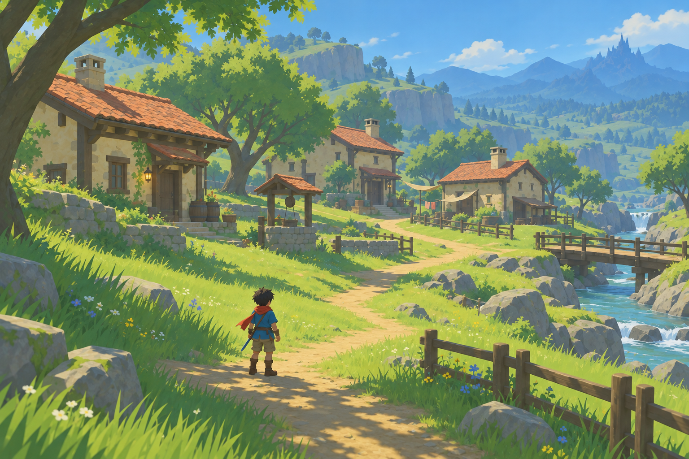

<!doctype html>
<html lang="zh-CN"><meta charset="utf-8"><meta name="viewport" content="width=device-width, initial-scale=1"><title>青芽村 · 目标与实机</title>
<style>
:root{color-scheme:dark}*{box-sizing:border-box}body{margin:0;padding:30px;background:#15221e;color:#e9efdf;font:16px/1.65 system-ui,sans-serif}main{max-width:1600px;margin:auto}h1{font-size:30px;margin:0 0 8px}p{color:#bccbbe;margin:0 0 25px}.grid{display:grid;grid-template-columns:1fr 1fr;gap:20px}figure{margin:0;background:#21332a;border:1px solid #3b5142;border-radius:12px;overflow:hidden}figcaption{padding:14px 18px}small{display:block;color:#b4c5b6}img{display:block;width:100%;height:auto}a{color:#d6e7a9}.shots{display:grid;grid-template-columns:1fr 1fr;gap:20px;margin-top:20px}footer{margin:28px 0;color:#b4c5b6}@media(max-width:900px){body{padding:18px}.grid,.shots{grid-template-columns:1fr}}
</style><main><h1>青芽村 · 从目标图到可走动场景</h1><p>目标方向已确认。右侧为 Godot 实际渲染的第一版；场景造型、地貌和材质还需继续打磨。</p><div class="grid">
<figure><figcaption>已认可的美术目标<small>AI 概念图，非实机截图</small></figcaption><a href="../assets/style-volume-v2/target-concept-refined.png"></a></figure>
<figure><figcaption>当前实机 · 村口与远山<small>真实 3D 场景、碰撞与光照，角色沿用 2D 精灵</small></figcaption><a href="../artifacts/style-v2-1.png"></a></figure></div>
<div class="shots"><figure><figcaption>实机 · 村庄侧景</figcaption><a href="../artifacts/style-v2-2.png"></a></figure><figure><figcaption>实机 · 屋檐与树荫</figcaption><a href="../artifacts/style-v2-3.png"></a></figure></div>
<footer>双击项目中的 VillagePreview.command 进入场景。WASD 走动，空格跳跃，Shift 冲刺；F 跟随，F1/F2/F3 观景，F4 日光，R 回村口，H 隐藏说明。<br>本版重点验证村庄视觉落地；正式第一大关与玩家存档保持独立。</footer></main></html>
